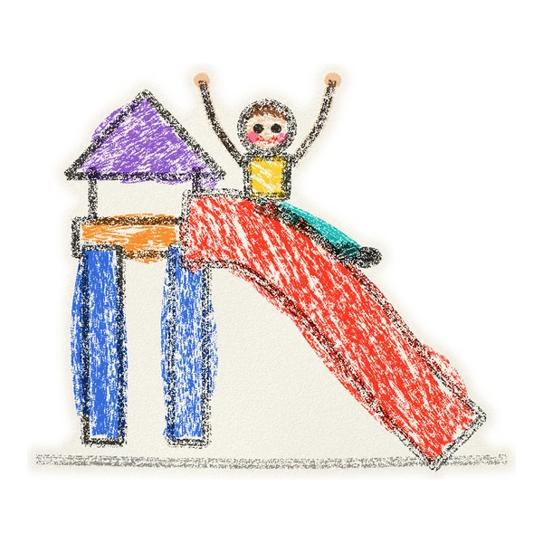
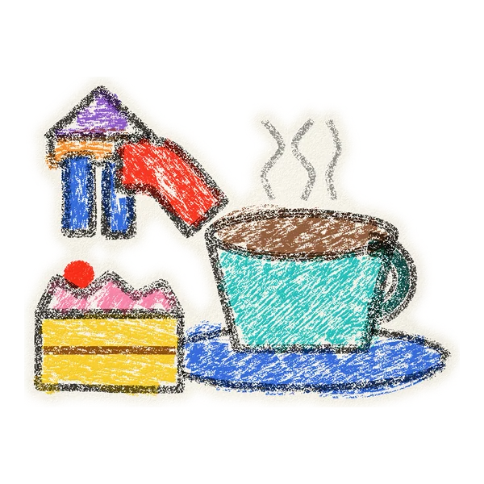
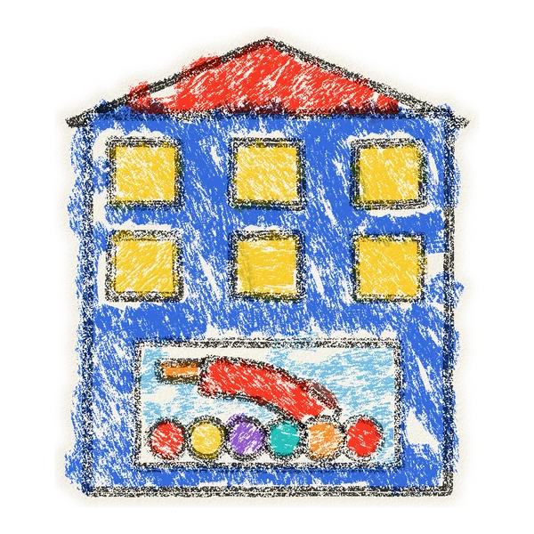
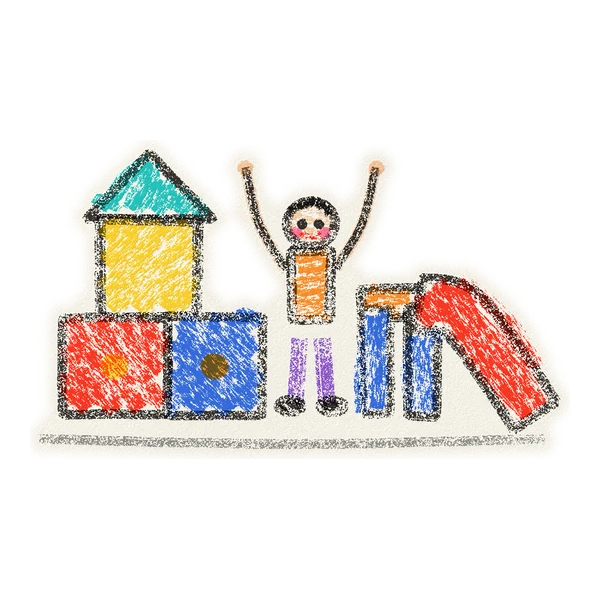
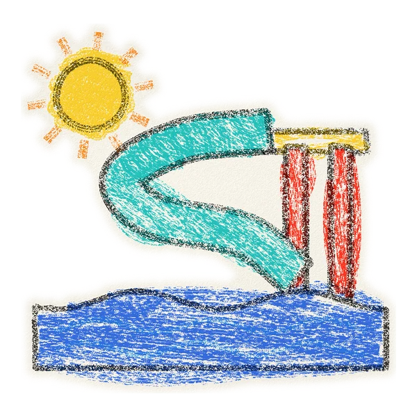

Ihriská na mieru
Panelové interiérové ihriská pre prevádzky. Od prvej konzultácie po montáž na kľúč.
Z čoho je ihrisko
Každý diel na mieru
Ihrisko skladáme z oceľovej konštrukcie, plošín, sietí a herných prvkov. Skladbu prispôsobíme vášmu priestoru.
- 01Návrh pre váš priestor
- 02Konštrukcia, plošiny a siete
- 03Šmykľavka, bazén a prvky
- 04Montáž na kľúč
Ťahaním otočíte
01
Čo sú panelové ihriská
Nosnú konštrukciu tvoria oceľové trubky a spojky. Konštrukciu obaľujeme penou a vinylom, priestor uzatvárajú siete. Na konštrukciu sa pripájajú herné prvky: šmykľavky, tunely, siete a závesné moduly.
Ihriská spĺňajú normy EN 1176 (vybavenie ihrísk) a EN 1177 (povrchy tlmiace náraz).
02
Postup
- KonzultáciaZistíme, pre koho je ihrisko a čo od neho čakáte.
- Zameranie priestoruPresne zameriame plochu, výšku stropu, vstupy a okná.
- Návrh a 3D vizualizáciaDizajn, ktorý využije dostupný priestor a sedí na cieľovú skupinu.
- VýrobaKonštrukcia, obaly a herné prvky.
- Dodanie a montážIhrisko odovzdáme pripravené na okamžité používanie.
03
Herné prvky
- šmykľavky a tobogány
- preliezačky a moduly
- sieťové chodníky a balančné prvky
- trampolíny, tunely a prekážkové dráhy
- tubingové dráhy a lezecké steny
- zóny pre rôzne vekové kategórie
Prvky rozvíjajú motoriku, koordináciu, kreativitu a sociálne zručnosti detí.
04
Kde sa hodia
- Rodinné centrá a herneZábava pre deti počas nákupov a voľného času.

- Kaviarne a cukrárneDeti sa hrajú, rodičia oddychujú.

- Hotely a penziónyRodinná atrakcia navyše k ponuke.

- Škôlky a vzdelávacie centráBezpečné prostredie na hru a rozvoj.

- Aquaparky a kúpaliskáKompletné detské zóny.

05
Materiál a servis
Ihriská vyrábame z kvalitných materiálov s dôrazom na bezpečnosť a dlhú životnosť. Na sklade máme konštrukčné trubky, spojky, siete, peny na obaľovanie konštrukcie a závesné moduly.
Robíme aj servis a ročné kontroly (revízie) ihrísk.

Napíšte nám
Opíšte nám svoj priestor alebo ihrisko a ozveme sa vám.